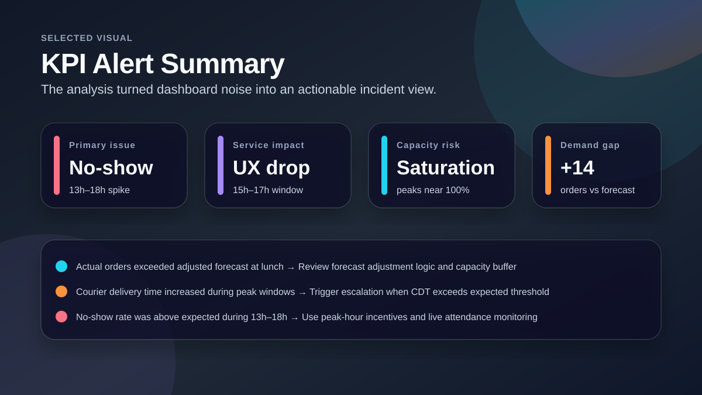
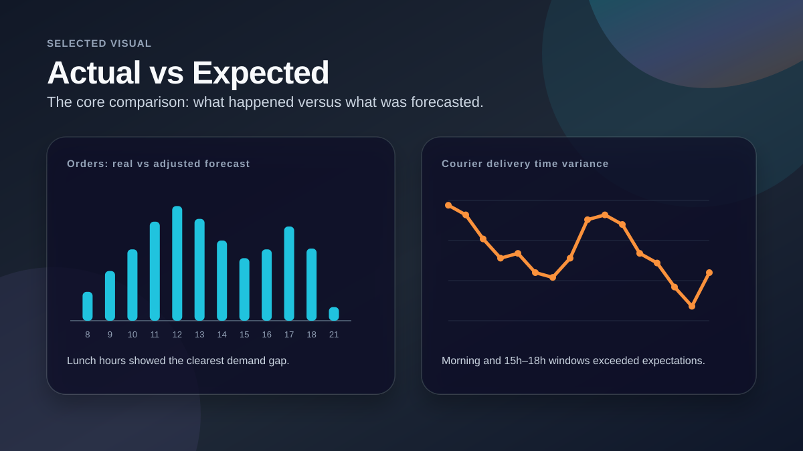
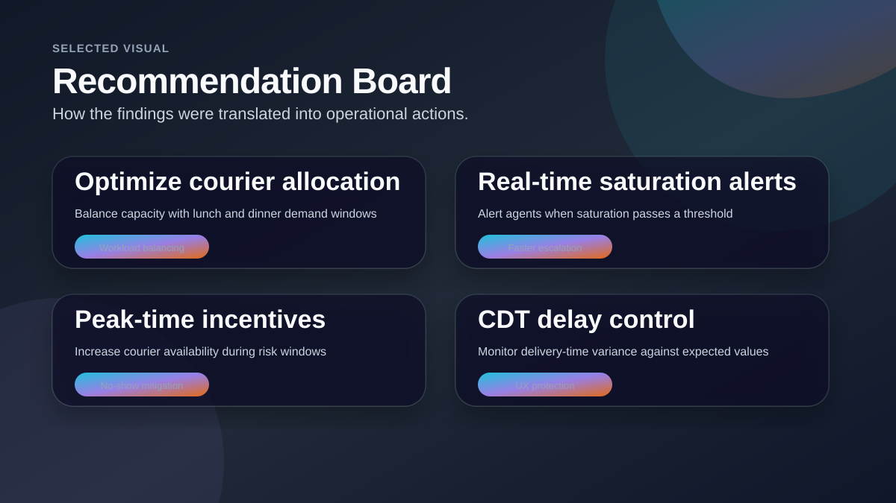

Operational KPI Performance Investigation
An operations analytics case study focused on identifying why delivery performance dropped, which KPIs changed, and which real-time actions could reduce future risk.

Project Snapshot
Business Question
The operation showed a performance drop compared with forecasted expectations. The goal was to explain what failed, why it may have happened, and how an operations team could react faster during the day.
My Analytical Approach
- Compared actual and expected values across hourly time slots.
- Reviewed no-show rate, utilization, efficiency, saturation, courier delivery time and UX.
- Grouped deviations into demand, capacity and service-quality signals.
- Translated observations into concrete operational actions.
Selected Visuals from the Analysis

KPI Alert Summary
A one-screen summary of the main incident signals: no-show spike, UX drop, saturation risk and demand above forecast.

Actual vs Expected
Shows how the case study compared real performance with forecasted or adjusted expectations.

Recommendation Board
Turns the analysis into operational actions such as real-time alerts, peak-hour incentives and courier allocation changes.
Key Findings
No-show risk window
The no-show rate was visibly above expected levels between 13h and 18h, creating a capacity risk during important operating hours.
Service-quality impact
Courier delivery time increased in the morning and again from 15h to 18h, overlapping with a UX drop.
Forecast gap
Actual order demand exceeded adjusted forecast during lunch hours, indicating that capacity planning needed a buffer or faster reaction process.
Recommendations / Outcome
Set live KPI alerts
Use thresholds for saturation, no-show rate and delivery-time variance so agents can react before service quality drops.
Adjust courier allocation
Review peak-hour courier capacity and workload distribution, especially around lunch and afternoon demand.
Use targeted incentives
Apply incentives or reminders during high-risk windows to reduce no-show impact and protect UX.